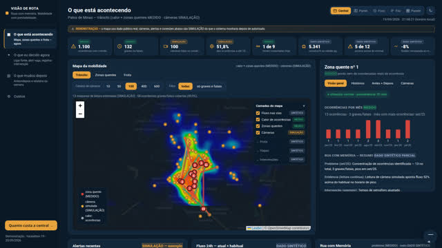

Hackathon Cidades Inteligentes · Patos de Minas · 2026
A mesma câmera. Outra pergunta.
A cidade já tem câmeras. O protótipo faz uma segunda leitura: quantos passam, quanto de fila, onde há conflito de tráfego — sem identificar rosto ou placa.
O painel do gestor
Veja a cidade, entenda o problema, teste uma alternativa e meça se melhorou.
Entrar como gestor →
Segurança e guarda dos dados
O dado fica onde está
Não copiamos o acervo de imagens da cidade. O leitor roda ao lado do gravador que já existe, lê o vídeo ali mesmo e devolve só o número — tipo, quantidade, janela de tempo. Nada de imagem viaja, nada fica guardado em dobro.
Como o leitor trabalha
Análise do que já foi gravado — com atraso, de propósito
Não precisamos transmitir vídeo. Contar trânsito e comparar antes e depois pede ver a mesma hora em muitos dias, não o instante.
A leitura no instante é possível depois; hoje o leitor é mais lento que o vídeo numa máquina comum — para contagem histórica isso não atrapalha.
Como o sistema decide
Critérios claros
Três regras simples guiam o que o painel mostra — e cada número diz de onde veio.
Número decide por regra
Fila acima de X por Y minutos vira alerta de atenção. A regra é escrita; qualquer pessoa pode ler.
Texto livre passa por classificador
Mensagens em texto livre são classificadas automaticamente; em caso de dúvida, uma pessoa decide.
Todo número diz de onde veio
Cada valor carrega uma etiqueta, sempre visível junto ao número.
Os números
O tamanho do problema, em três contas
Cada número aqui carrega a origem ao lado — medido em dado público, simulado sobre esse dado, ou estimado pelo time sem cotação fechada.
1.100 ocorrênciascom coordenada · 132 graves ou fatais
Dado aberto da Secretaria de Estado de Justiça e Segurança Pública (SEJUSP-MG), 2025 e início de 2026. Ver origem e limites.
94 pontos de leituraalcançam metade dessas ocorrências
Simulação nossa sobre o dado medido acima — a posição é uma célula no mapa, não uma câmera confirmada; a lista real dos pontos substitui a conta. Como ler.
R$ 49 milo piloto de 90 dias, contra R$ 1,2 milhão para 50 câmeras novas
Estimativa do time, sem cotação fechada, com as premissas abertas na calculadora do projeto.
O problema, na voz de quem decide
“Eu tenho como tratar esses dados hoje? Não tenho massa crítica.”
relato de conversa do diretor de mobilidade com o time, 19/09 — requer validação formal para uso institucional
Como funciona
Quatro passos, sem pedir equipamento novo
O pedido de piloto não inclui câmera, sensor nem aplicativo novo. Propõe uma segunda leitura do que já está ligado, sujeita à validação técnica da cidade.
Uma câmera existente fornece o vídeo do piloto
O ponto de captura é definido com a cidade; o protótipo não pressupõe câmera nova.
O vídeo é processado no ambiente aprovado
O piloto deve definir onde processa, quem acessa e como audita a retenção.
Sai contagem por tipo
A cada 5 minutos — carro, moto, ônibus, pedestre, fila.
A via ganha antes e depois
Toda mudança de trânsito passa a ter uma medição que a justifica.
Ver funcionando
Duas telas, dois públicos
Aviso: o mapa usa dado público real das ocorrências de trânsito. Câmeras, alertas e vagas são simulação — marcados na própria tela.
Onde a gente entra
A terceira mesa
Não é um centro de controle novo — é a terceira mesa do que a própria secretaria já está desenhando.
Zona azul digital
Concessão em preparo; veículos com câmera rodam a cidade e viram vetor de informação para a prefeitura.
Semáforos inteligentes
Controladoras já compradas, rede em expansão, coordenação de tempos por cenário.
Auditar, processar e medir
A mesa que falta — e é a nossa: ler o que as outras duas geram, e provar o antes e o depois.
Não é um centro novo; é a terceira mesa do que a própria secretaria já está desenhando.
O que pedimos à cidade
Três coisas pequenas
1 hora de vídeo
Gravado de uma câmera que já existe — sem ligação nenhuma às centrais.
A lista dos pontos
Onde as câmeras já estão hoje, para priorizar a leitura pelo que mais importa.
1 corredor por 90 dias
Um trecho para medir o antes e o depois de uma mudança de trânsito.
O pedido não inclui compra de equipamento novo; disponibilidade de equipe e infraestrutura precisa ser confirmada pela cidade.
Os dados são de todos
Aberto a qualquer time
83 fontes verificadas, 1.100 ocorrências de trânsito com coordenada, base legal e técnicas reunidas — abertas a qualquer time do hackathon, não só ao nosso.
Pergunte ao projeto
Cinco perguntas diretas
Respostas preparadas pelo time — clique para abrir.
Isso é vigilância? O leitor conta tipos de veículo e pessoa — não identifica quem é. O foco é o fluxo da via, não o indivíduo. O desenho evita guardar imagem ou dado que identifique alguém.
Precisa de câmera nova? Não pede câmera nova. O piloto usa uma câmera que a cidade já tem, com a rua e o horário definidos junto com a secretaria.
Onde ficam as imagens? Ficam onde sempre ficaram: no gravador da cidade. O leitor roda ao lado, lê e devolve só o número — não copia o acervo de vídeo.
O que já funciona hoje? O leitor de vídeo conta por tipo, testado em 1 vídeo aberto. A porta de entrada valida e recusa dado pessoal. O painel mostra antes e depois. As provas do projeto são recalculáveis, 14 de 14.
O que ainda falta? Acesso às câmeras da cidade, contagem conferida à mão num vídeo local, ligação com semáforo, ônibus e estacionamento, e operação contínua fora do notebook do time.